Übung Web Map
Übung 1: Erste Schritte mit ArcGIS Online (Online Tutorial)
Führe das Online Tutorial «Erste Schritte mit ArcGIS Online» durch. Damit erlernst Du die grundlegenden Funktionalitäten der Kartenerstellung in ArcGIS Online.
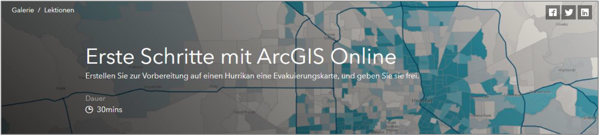
Übung 2: ArcGIS Online: Inhaltsseite organisieren
In ArcGIS Online kann die eigene Inhaltsseite personalisiert werden. Es können Ordner erstellt werden in denen Inhalte verwaltet und organisiert werden können.
Melde Dich mit Deinen persönlichen Nutzerdaten auf dem ArcGIS Online Organisationskonto der ZHAW an: ZHAW ArcGIS Maps
Wechsle von der Startseite in das Register Inhalt. Im Ordner «Alle eigenen Inhalte» sollten die beiden Inhalte «At-Risk Population in Houston» (Instant App) und «Houston Evacuation Map» (Web Map) welche Du im Rahmen der ersten Übung (Online Tutorial) erstellt hast, aufgeführt sein.
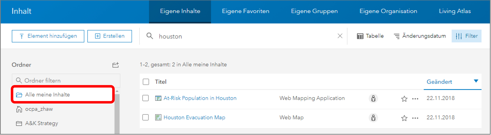
Erstelle einen neuen Ordner mit dem Namen «Modul AGI» in dem Du alle Inhalte ablegen kannst, welche Du im Rahmen dieses Moduls auf ArcGIS Online hochlädst. Klicke hierfür auf «Neu», und gib den Namen für den neu zu erstellenden Ordner ein.
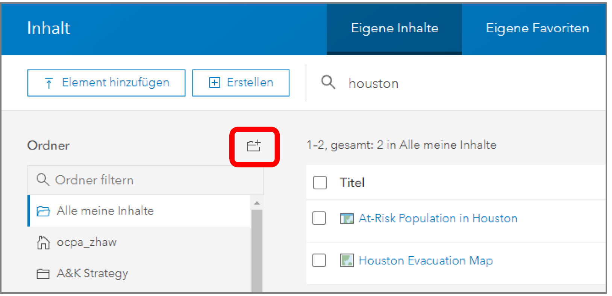
Verschiebe nun die beiden Inhalte «At-Risk Population in Houston» (Web Mapping Application) und «Houston Evacuation Map» (Web Map) in den soeben neu erstellten Ordner. Gehe hierfür zurück auf den Ordner «Alle meine Inhalte». Selektiere die beiden Inhalte und klicke auf die Option «Verschieben».
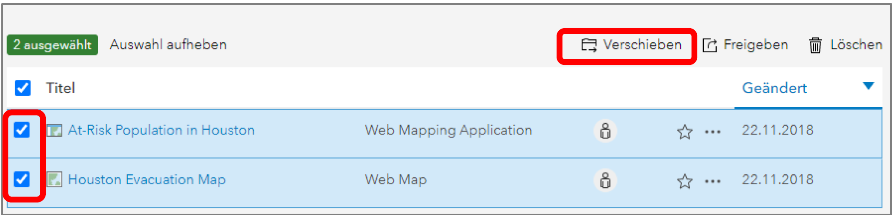
Wähle im sich öffnenden Fenster «Element verschieben» den Ordner «Modul AGI» und verschiebe diese Inhalte in den neuen Ordner
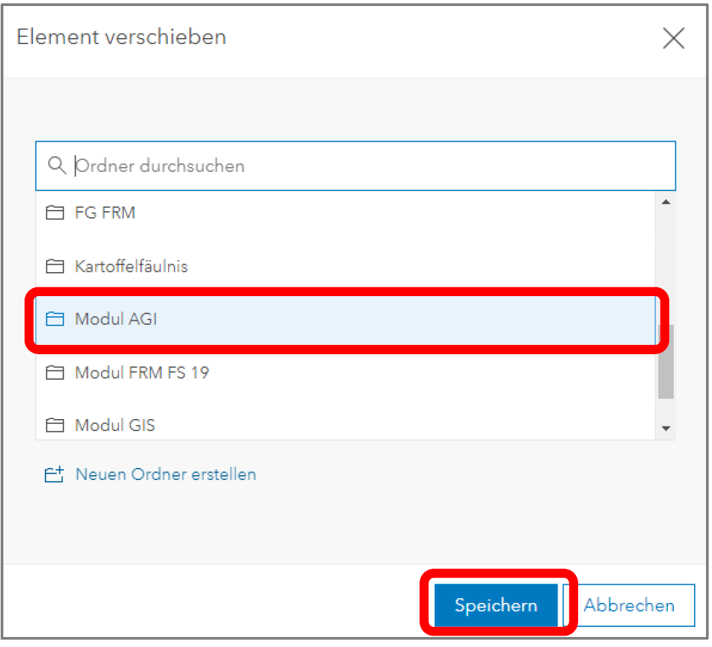
Lege alle Deine Inhalte, welche Du im Rahmen dieses Moduls auf ArcGIS Online hochlädst im Ordner «Modul AGI» ab.
Du kannst jederzeit neue Ordner erstellen und so Deine Inhalte auf ArcGIS Online organisieren.
Übung 3: ArcGIS Online: Freigabeeigenschaften bei bestehenden Inhalten ändern
Bei der Durchführung des Esri Online Tutorials «Erste Schritte mit ArcGIS Online» hast Du sowohl die Web Map als auch die Web Mapping Application für «Alle (öffentlich)» freigegeben. Ändere nun die Freigabe dieser beiden Inhalte, damit diese nur noch von Dir aufgerufen werden können.
Zeige die Inhalte im Ordner «Modul AGI».
Klicke bei der Web Mapping Application «At-Risk Population in Houston» auf das Globus-Symbol.

Ändere im Freigabefenster nun die Freigabeeigenschaften für diesen Inhalt. Diese Anwendung soll nun nicht mehr für die Öffentlichkeit freigegeben sein, sondern nur noch für Dich (Du kannst die Anwendung öffnen, andere haben jedoch keinen Zugriff mehr darauf). Wähle hierfür die Option «Eigentümer».
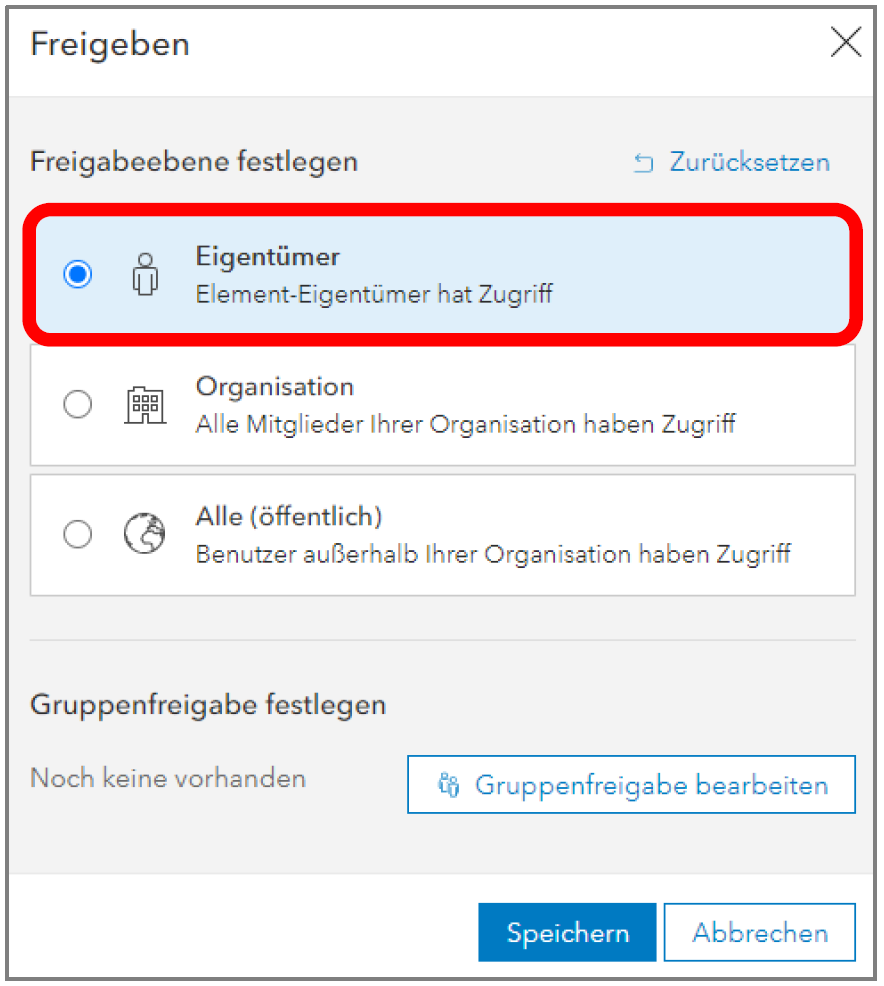
Führe dasselbe für die Web Map «Houston Evacuation Map» durch.
Übung 4: ArcGIS Pro: Karte einrichten
Lade die Daten von Moodle herunter (ZIP-File: Daten Einführungsübung ArcGIS Online), extrahiere die Daten unter einem sinnvollen Ordnerpfad und erstelle ein neues ArcGIS Pro Projekt mit dem Namen E_ArcGIS_Online im Ordner, in dem Du die Übungsdaten extrahiert hast.
Übrigens: Du kannst alle Deine Karten (Maps) welche Du im Laufe dieses Unterrichtsblocks erstellst in diesem Projekt speichern
Starte ArcGIS Pro und erstelle ein neues ArcGIS Pro Projekt mit dem Namen «E_ArcGIS_Online».
Melde Dich mit Deinen persönlichen Benutzerdaten (kürzel_student / PW) in ArcGIS Pro beim ArcGIS Online Portal der ZHAW an (sofern Du noch nicht angemeldet bist).
Benenne die neue Map als «Einführung» (Contents Pane > Kontextmenü Map > Properties > Map Properties > General Tab > bei Name Eingabe vornehmen > mit OK bestätigen).
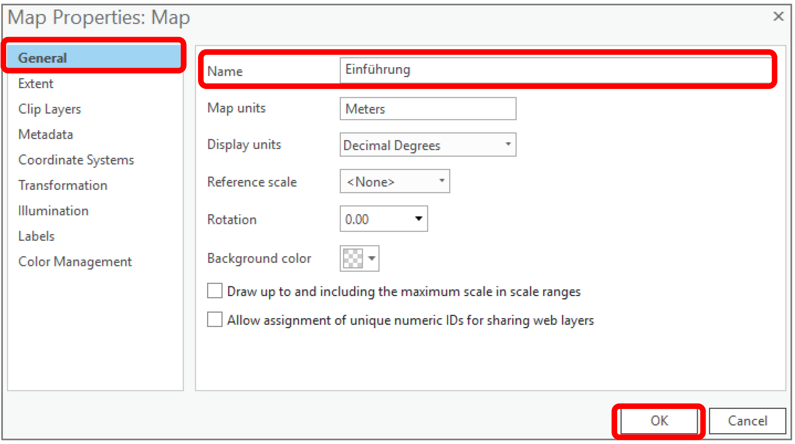
Gehe in das Catalog Window und überprüfe die Inhalte im Projektordner. Zusätzlich zur Projekt-GDB sollte die Geodatenbank «uebung_online_publikation.gdb» aufgeführt sein. Falls nicht, erstelle im Catalog Pane eine Verbindung zum Ordner her, in dem Du die heutigen Übungsdaten entpackt hast (Catalog Pane > Project > Folders > Kontextmenü Add Folder Connection).
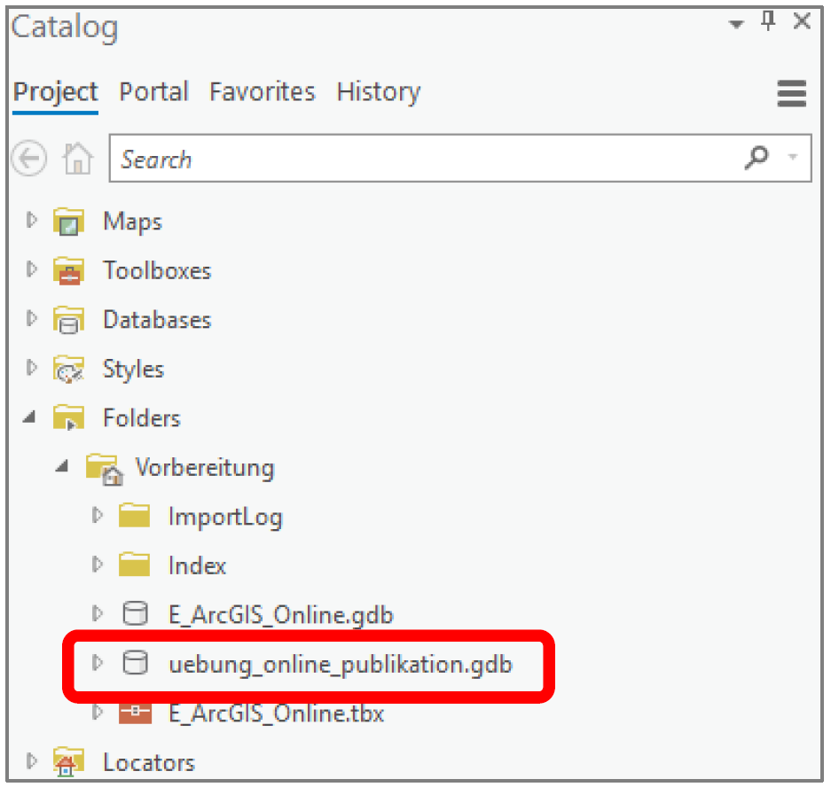
Die Geodatenbank «uebung_online_publikation.gdb» enthält folgende Feature Classes:
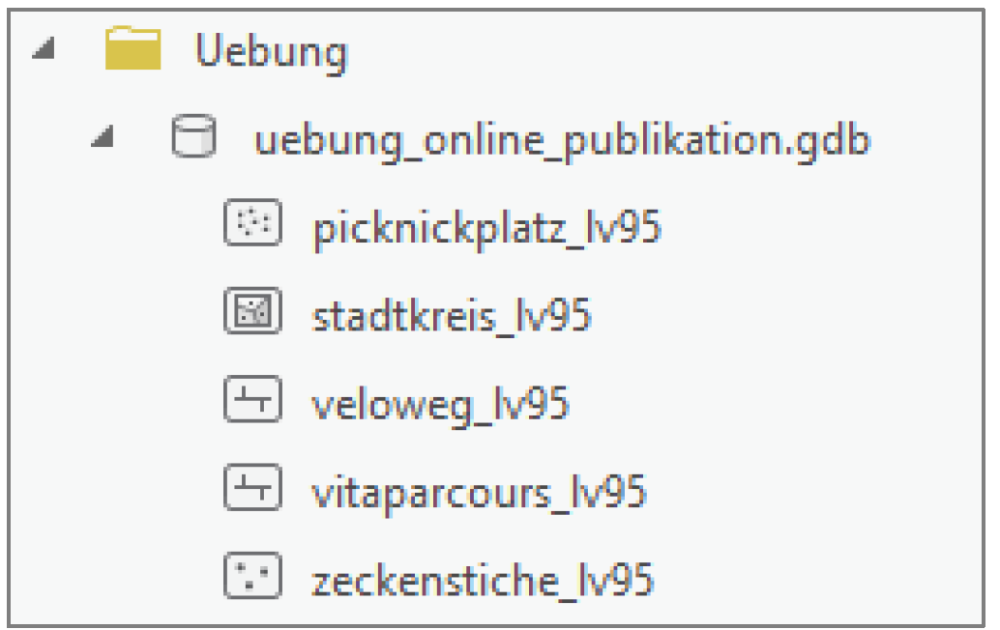
Übung 5: ArcGIS Pro: Koordinatensystem anpassen
Damit die Daten später auf ArcGIS Online veröffentlicht werden können, muss den Daten das Koordinatensystem «WGS 1984 Web Mercator Auxiliary Sphere» zugewiesen werden. Momentan ist den fünf Layern noch das Schweizerische Koordinatensystem zugewiesen. Führe für jeden einzelnen Layer eine Koordinatentransformation durch.
Um Probleme bei der Veröffentlichung auf ArcGIS Online zu vermeiden empfiehlt es sich, immer mit dem Koordinatensystem «WGS 1984 Web Mercator Auxiliary Sphere» zu arbeiten.
Öffne das Geoprocessing Window (Menü Analysis > Tools)
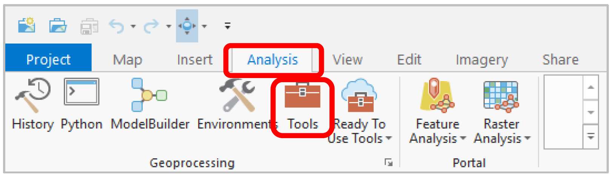
Suche nach «Project» und öffne das Tool «Project (Data Management Tools). Transformiere die fünf Layers vom Schweizerischen Koordinatensystem in das projizierte weltweite Koordinatensystem. Definiere hierfür die nötigen Werkzeug-Parameter. Speichere die Output Layers in der gleichen Geodatenbank (uebung_online_publikation.gdb), jeweils ohne «_lv95» (bsp. picknickplatz). Das Koordinatensystem WGS 1984 Web Mercator Auxiliary Sphere findest Du unter folgendem Pfad: Projected coordinate system > World > WGS 1984 Web Mercator (auxiliary sphere). Füge es doch zu Deinen Favoriten hinzu.
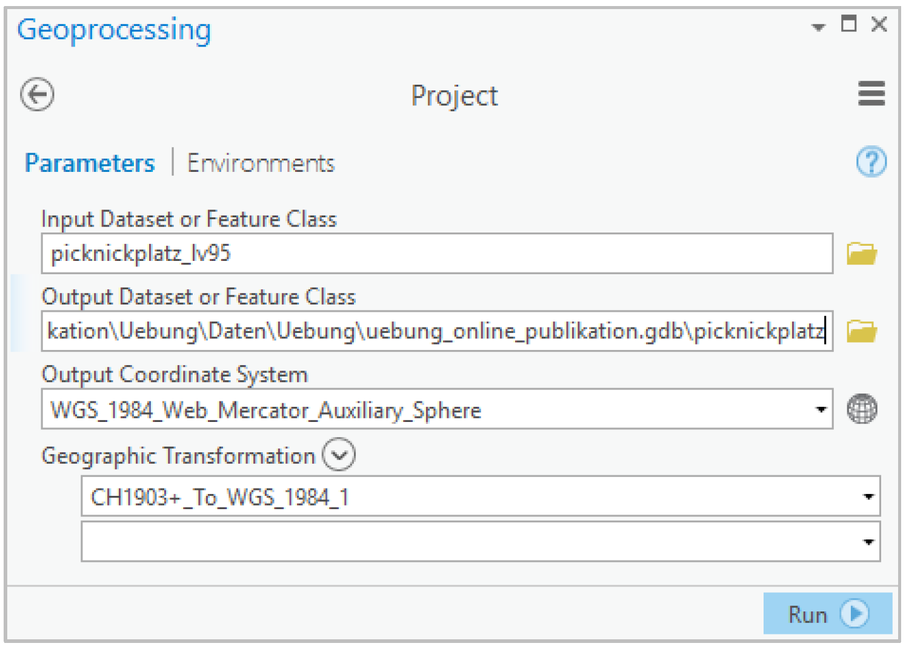
Nach Ausführung des Werkzeugs «Project» werden die Layers automatisch der Karte «Einfuehrung» hinzugefügt.
Wichtig: Entfernen Sie den Layer «veloweg» aus Ihrer Karte.
Übung 6: ArcGIS Pro: Vorbereitung der Karte
Symbolisiere die vier Layer in einer Art und Weise, dass sie gut voneinander unterschieden werden können. Weise dem Layer «stadtkreis» eine Einzelwert-Legende basierend auf dem Feld «kname» zu und versehe diesen Layer mit einer Transparenz. Ändere zudem die Basemap auf «Light Gray Canvas».
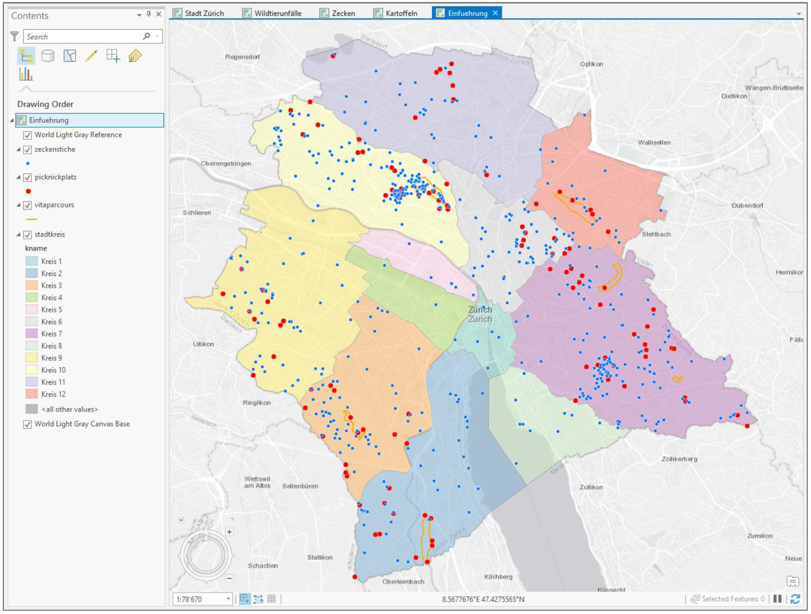
Aktiviere nun für den Layer «zeckenstiche» die Zeiteigenschaften:
Contents Window > Kontextmenü Layer «zeckenstiche» > Properties.
Wähle unter Time folgende Einstellungen und bestätige sie mit OK:
- Layer Time: Each feature has a single time field
- Time Field: date
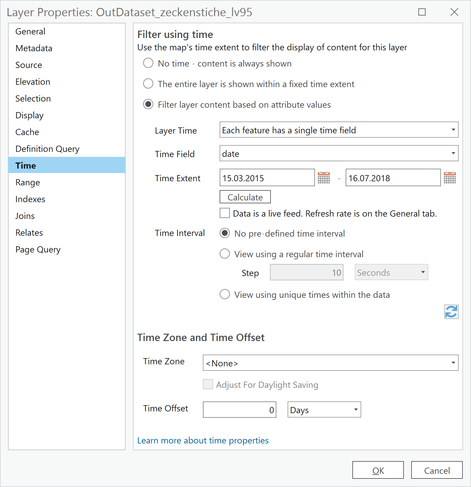
Für den Layer «zeckenstiche» hast Du die Zeiteigenschaften aktiviert und Du kannst nun im Menüband «Time» die Eigenschaften der Zeitanimation definieren und anpassen.
Übung 7: ArcGIS Pro: Veröffentlichen (Publishing) einer Karte
Im Folgenden wird diese Karte mitsamt all ihren Inhalten, Symbolisierung und Funktionalitäten als Web Map auf ArcGIS Online veröffentlicht (direkt via ArcGIS Pro). Vergewissere Dich, dass Du mit dem ZHAW ArcGIS Online Organisationskonto verbunden bist (Portal Connection) und speichere das ArcGIS Pro Projekt.
Wechsle in das Menüband «Share»
Wähle anschliessend «Web Map»

Gebe der Karte einen Namen (Zecken Stadt Zürich Vorname Name), schreibe eine kurze Zusammen-fassung und definiere Tags. Wähle folgende Einstellungen:
- Select a Configuration: Copy all data Exploratory
- Location Folder: Modul AGI (Die Inhalte werden in ArcGIS Online in diesem Ordner abgelegt)
- Share With: Groups (wähle «Modul Angewandte Geoinformatik HS 2021»; die Karte und die Feature Layers werden nur für diese Gruppe freigegeben).
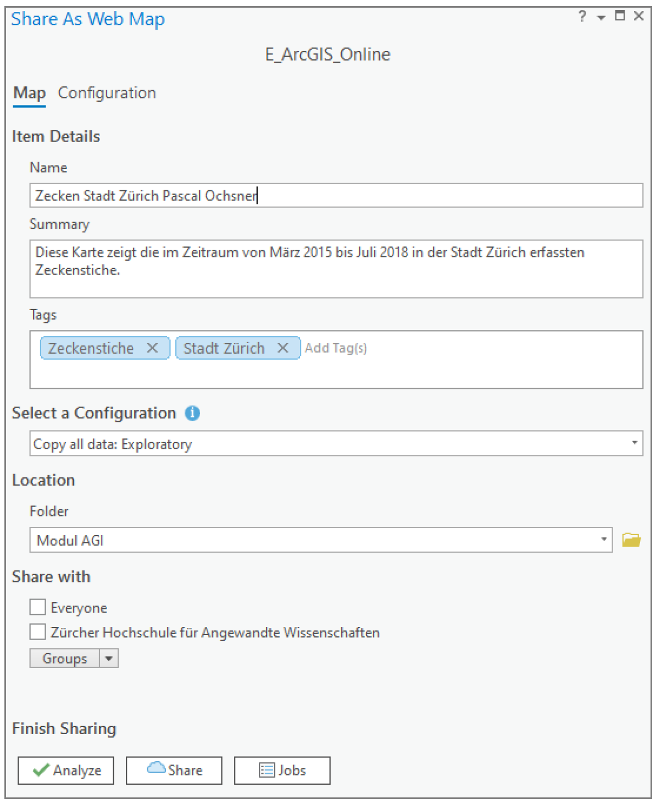
Klicke auf «Analyze» und löse bei Bedarf die angezeigten Probleme. Nutze zur Lösung der etwaigen Probleme die ArcGIS Webhelp. Sofern die Warnung «Layer does not have a feature template set» erscheint, kann diese vernachlässigt werden.
Die Meldung «00374 Unique numeric IDs are not assigned» kann über das Kontextmenü gelöst werden. (Kontextmenü -> «Auto-Assign IDs Sequentially»)
Veröffentliche anschliessend die Web Map mit «Share». Dieser Vorgang kann einige Zeit in Anspruch nehmen.
Übung 8: ArcGIS Pro: Veröffentlichen (Publishing) eines Layers
In der vorangehenden Übung 7 hast Du eine gesamte Karte als Web Map veröffentlicht. Manchmal müssen oder sollen jedoch nur einzelne (oder mehrere) Layers als Web Layers veröffentlicht werden ohne gleichzeitige Erstellung einer Web Map. Erstelle nun in Deinem ArcGIS Pro Projekt eine neue Karte und lade den Layer «veloweg» hinzu. Anschliessend kann dieser Layer als einzelner Feature Layer auf ArcGIS Online veröffentlicht werden.
Gehe wiederum ins Menü «Share» und wähle «Web Layer > Publish Web Layer».
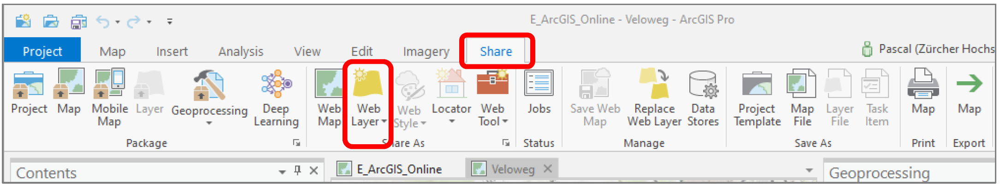
Gebe dem Layer den Namen «Velowege Vorname Name», schreibe eine kurze Zusammenfassung und definiere Tags. Wähle folgende Einstellungen:
- Layer Type: Feature
- Location Folder: Modul AGI (Der Layer wird in ArcGIS Online in diesem Ordner abgelegt)
- Share With: Groups (wähle «Modul Angewandte Geoinformatik HS 2022»; der Feature Layer wird nur für diese Gruppe freigegeben).
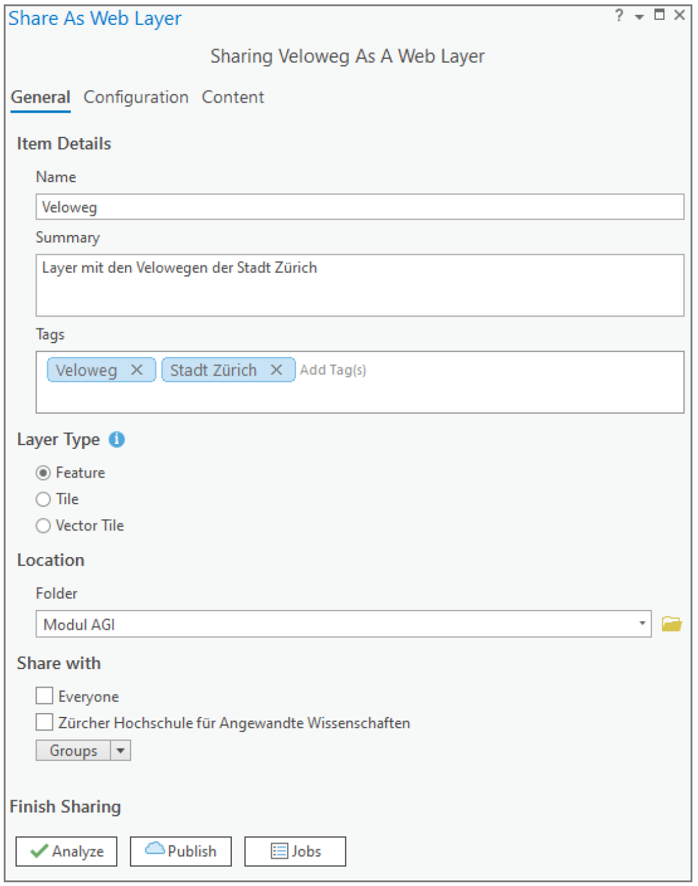
Klicke auf «Analyze» und löse angezeigte Probleme.
Die Meldung «00374 Unique numeric IDs are not assigned» kann über das Kontextmenü gelöst werden. (Kontextmenü -> «Auto-Assign IDs Sequentially»)
Veröffentliche anschliessend den Web Layer «Velowege Vorname Name» mit «Share». Dieser Vorgang kann einige Zeit in Anspruch nehmen.
Speichere das ArcGIS Pro Projekt.
Übung 9: ArcGIS Online: Web Map anpassen
Wechsle in einen Internet Browser und melde Dich beim ZHAW ArcGIS Online Organisationskonto an. Wechsle anschliessend in das Menü «Inhalt» und betrachte die Inhalte im Ordner «Modul AGI». Momentan sollten zwei Feature Layer inkl. Service Definition, zwei Web Maps und eine Web Mapping Application (Instant App) als Inhalte sichtbar sein.
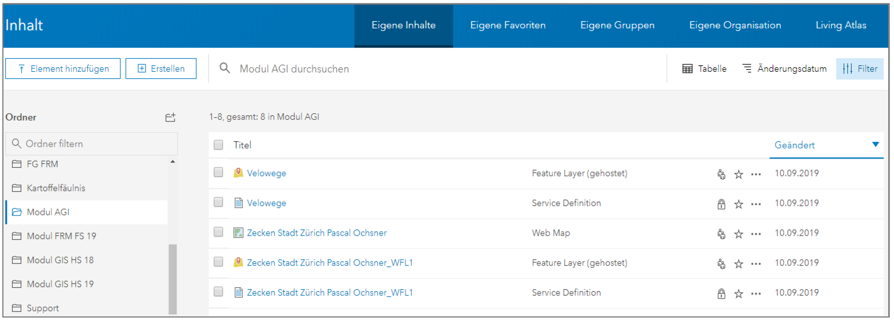
Inhalte können auch gelöscht werden, beispielsweise benötigst Du die Web Mapping Application «At-Risk Population in Houston» und die Web Map «Houston Evacuation Map» nicht mehr. Selektiere die beiden Inhalte und durch Klicken auf «Löschen» kannst Du diese Inhalte unwiderruflich löschen. Merke Dir: Sofern Du nur die Web Map löschst, funktioniert die Web Mapping Application nicht mehr. Jede Web Mapping Application basiert immer auf einer Web Map!
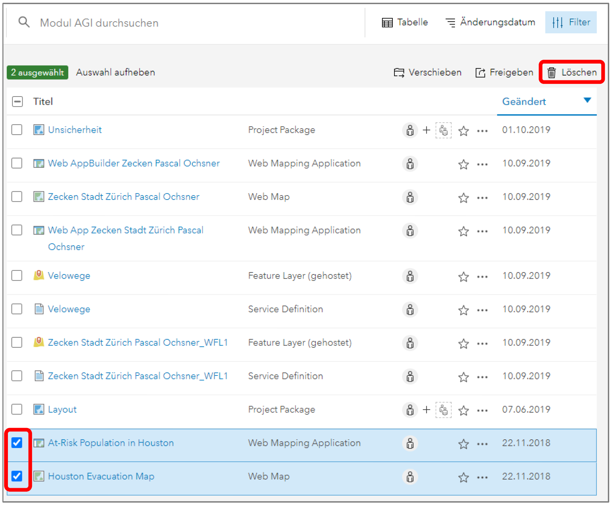
Öffne nun die Web Map «Zecken Stadt Zürich Vorname Name». Klicke auf «…» und wähle «In Map Viewer öffnen» (evtl. in neuem Browser-Fenster öffnen).
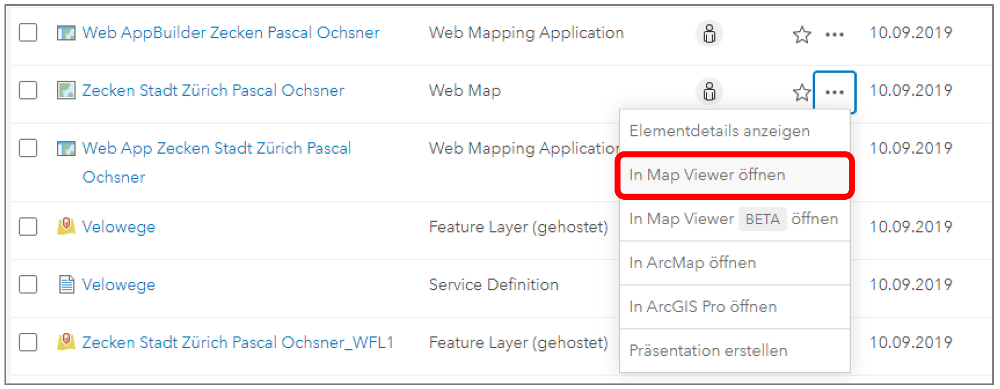
Die Web Map enthält die vier Feature Layer «zeckenstiche», «picknickplatz», «vitaparcours» und «stadtkreis». Ändere nun die Namen der Layer (bsp. Zeckenstiche Zeit-animiert statt zeckenstiche):
Gehe auf «Inhalt».
Öffne bei Layer «zeckenstiche» das Kontextmenü durch Klicken auf «…»
Wähle «Umbenennen» und ändere den Layernamen auf «Zeckenstiche Zeit-animiert»
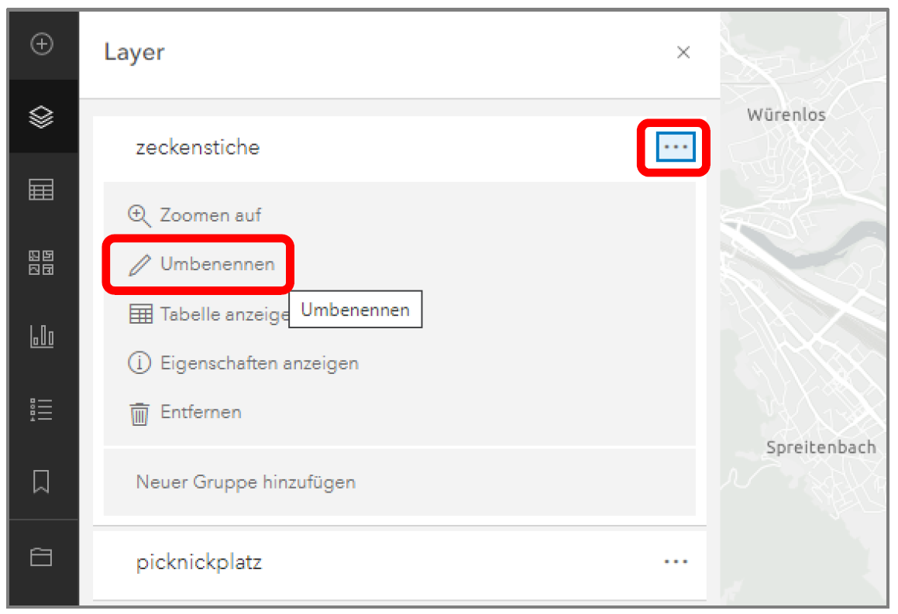
Passe die Namen der anderen Layers an (bsp. Grossschreibung)
Füge nun das Veloweg-Netz der Stadt Zürich als zusätzlichen Feature Layer zur Karte.
Wähle «Hinzufügen» und dann «Durchsuchen von Layern» (beende bei Bedarf die Zeitanimation).
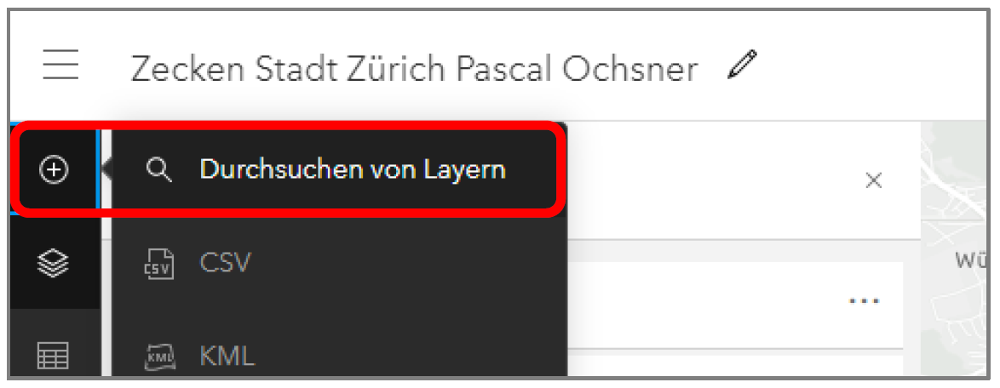
Suche unter «Eigene Inhalte». Gib im Suchfeld «Veloweg» ein. Der Layer sollte dann angezeigt werden. Füge den Layer durch Klicken auf «+» der Karte hinzu. Der Layer wird der Karte hinzugefügt.
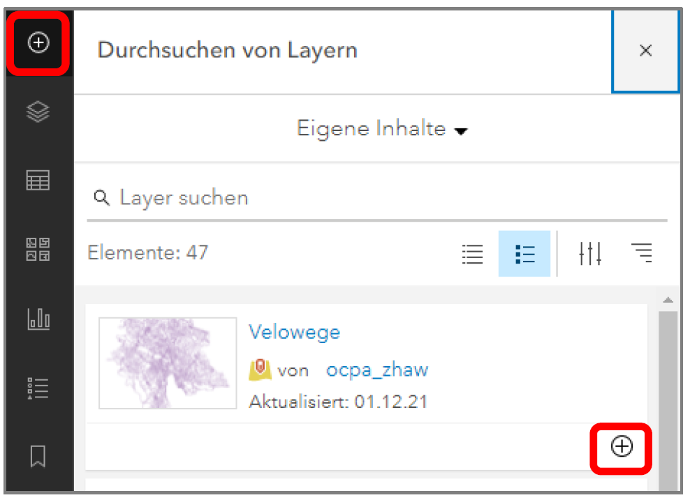
Verändere die Layer-Reihenfolge. Verschiebe den Layer «Velowege» unterhalb von «Vita Parcours».
Gehe in den Reiter «Layer».
Verschiebe mittels drag and drop den Layer «Velowege» an die gewünschte Position und ändere den Namen des Layers.
Alternative: Klicke unter Inhalt beim Layer «Velowege» auf die drei vertikalen Punkte und verschiebe den Layer an den gewünschten Ort.
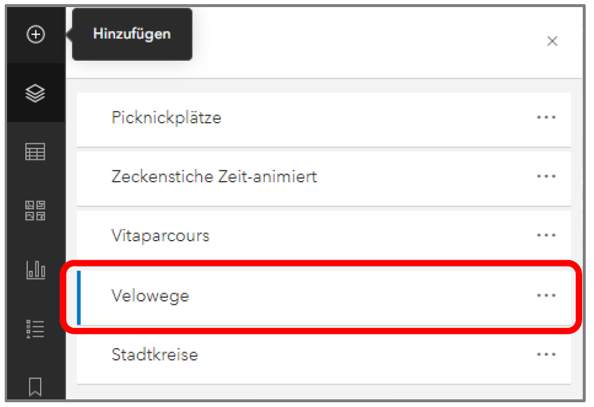
Ändere das Symbol für den Layer «Velowege» (bsp. ein dezentes dunkelgrau).
Selektiere den Layer «Velowege» in der Layer-Ansicht.
Öffne das Menü «Styles» (vertikales Menü rechts).
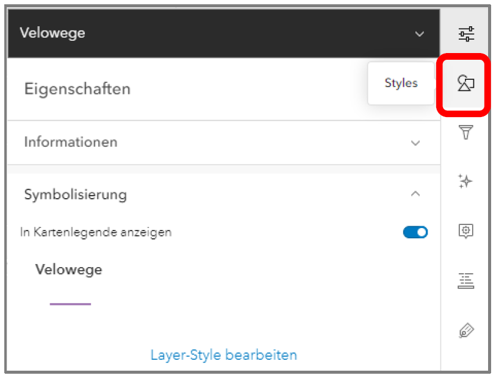
Gehe auf «Style-Optionen»
Klicke auf das Stift-Symbol und ändere die Linienfarbe und -breite.
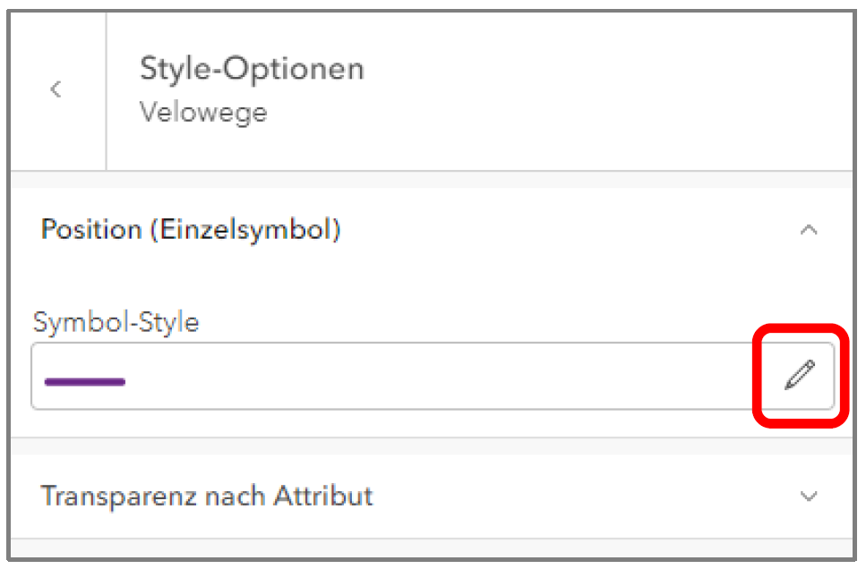
Bestätige die Eingaben mit “Fertig” > “Fertig”
Lade nun den Layer «Zeckenstiche Zeit-animiert» ein zweites Mal zur Webmap. Hierfür musst Du die Web-Feature-Layers «Zecken Stadt Zürich Vorname Name» nochmals zur Karte hinzufügen und anschliessend die Layers, welche nicht doppelt vorhanden sein sollen wieder entfernen. Ändere anschliessend den Style und deaktiviere die Zeitanimation.
Wähle «Hinzufügen». Füge den Web-Layer mit dem Namen «Zecken Stadt Zürich Vorname Name_WFL1» mittels «+» Button zur Karte hinzu.
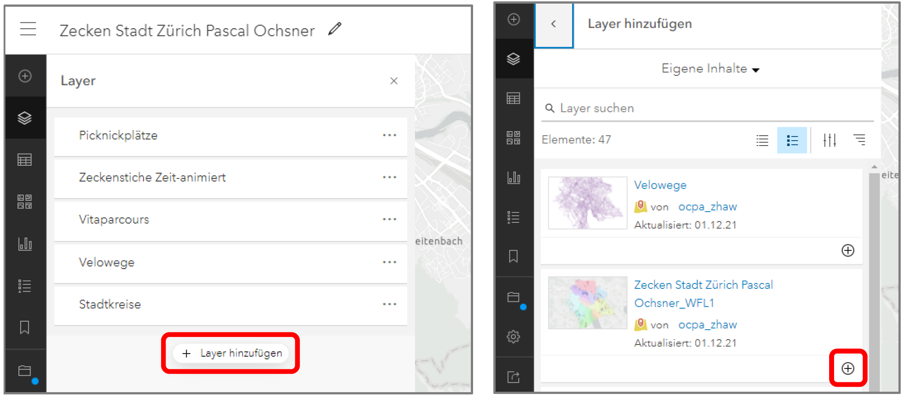
Hebe zuerst mittels «Gruppierung aufheben) die Gruppierung auf (dieser Feature Layer enthält vier verschiedene Layers). Entferne anschliessend die Layers «Picknickplatz», «Vitaparcours» und «Stadtkreis» aus der Webmap, denn diese Layers sollen nicht doppelt in der Webmap enthalten sein. Führe dies für jeden Layer einzeln durch.
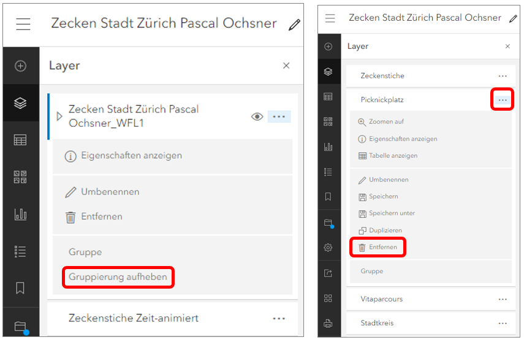
Ändere anschliessend beim neu hinzugefügten Zeckenstich-Layer den Namen zu «Gemeldete Zeckenstiche».
Deaktiviere nun die Option Zeitanimation im Layer «Gemeldete Zeckenstiche». Gehe in diesem Layer auf «Eigenschaften anzeigen» und deaktiviere die Zeiteigenschaften im entsprechenden Abschnitt.
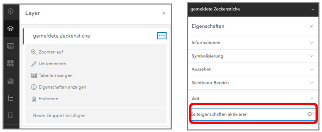
Verschiebe danach diesen Layer unterhalb des Layers «Zeckenstiche Zeit-animiert».
Verändere beim Layer «Zeckenstiche Zeit-animiert» den Style, so dass sich die animierten Zeckenstiche deutlich von den gemeldeten Zeckenstichen unterscheiden lassen. Wähle beispielsweise ein gelbes Punktsymbol inklusive Blooming-Effekt. Symboleffekte können via Reiter «Effekte» definiert werden.
Entferne beim Layer «Zeckenstiche Zeit-animiert» das Pop-up via «Pop-up konfigurieren». Somit wird verhindert, dass das Pop-up beim Anklicken eines Zeckenstich-Standortes zwei Mal aufgerufen wird.
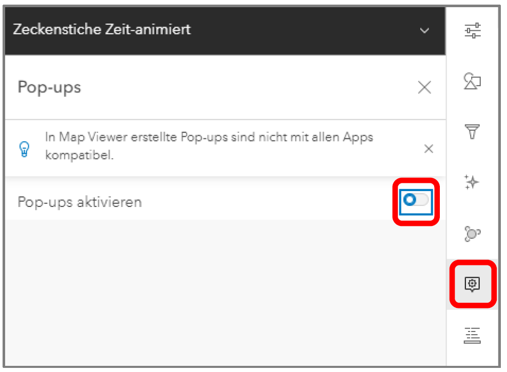
Pop-ups können übrigens über das Menü «Pop-ups» benutzerdefiniert angepasst werden. Probiere diverse Optionen für andere Layer aus.
Die Zeit-Animation kann im linken Bereich über das Menü «Karteneigenschaften» und dann «Optionen des Zeitschiebereglers» angepasst werden (Intervall, Geschwindigkeit etc.). Probiere auch hier unterschiedliche Optionen aus.
Erstelle nun noch zwei Bookmarks (Lesezeichen) für die Stadtkreise 7 und 10. Zoome hierfür in den Bereich des Stadtkreises 7. Gehe dann auf «Lesezeichen» > «Lesezeichen hinzufügen», gib «Stadtkreis 7» ein und bestätige die Eingabe mit der Enter-Taste. Gehe gleich vor für den Stadtkreis 10. Zoome nachfolgend wieder auf das gesamte Stadtgebiet.
Die Karte ist nun soweit vorbereitet, damit basierend auf dieser Web Map eine Web Mapping Applikation erstellt werden kann (folgende Übungen). Speichere die Karte via «Speichern und öffnen > Speichern».
Erst nachdem die Layers einer Karte fertig symbolisiert sind, die Pop-ups konfiguriert und die Layer-Funktionalitäten etc. definiert sind kann eine Web Mapping Applikation erstellt werden. Die Web Mapping Applikation übernimmt die grundlegenden Einstellungen, welche in der Web Map definiert sind.
In der Regel müssen sowohl die Web Map als auch die Web Mapping Applikation auf dieselbe Art und Weise freigegeben werden. Dies gilt natürlich auch für alle Web-Layers welche in einer Karte enthalten sind.
Übung 10: ArcGIS Online: Web App erstellen via “Instant Maps”
Erstelle nun eine Web Mapping Applikation basierend auf der vorher konfigurierten Web Map. In dieser Übung arbeiten wir mit «Instant Maps». Hierfür muss die Karte zuerst im «Map Viewer» geöffnet werden. Anschliessend generierst Du die Web Mapping Applikation über die Option «Instant Apps» (analog Übung 1 – Online Tutorial).
Wähle die Option «Schieberegler» und gehe auf «Vorschau». Gehe Zurück und erstelle die App mit «Auswählen».
Benenne die App als «Zecken App Zürich Vorname Name», lege sie im Ordner Modul AGI ab und wähle «App erstellen»
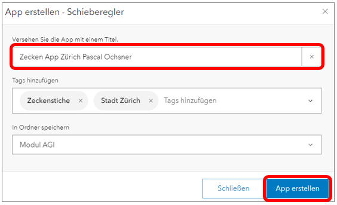
Gehe durch die 5 Schritte, aktiviere die Pop-Ups, die Lesezeichen und die Layer Liste. Veröffentliche anschliessend die Web App.
Ergänze die Web App nun noch mit einem zusätzlichen WMS-Layer. Gehe hierfür zuerst auf www.geolion.zh.ch und suche nach «Klimamodell». Gehe auf «Klimamodell ZH: Analysekarten (Raster)», öffne das Register «Datenbezug» und wähle den Link unter Datenbezug -> «WMS».
Wechsle in ArcGIS Online auf «Inhalt» und füge den WMS-Klimamodell via « + Neues Element» hinzu. Wähle die Option «URL».
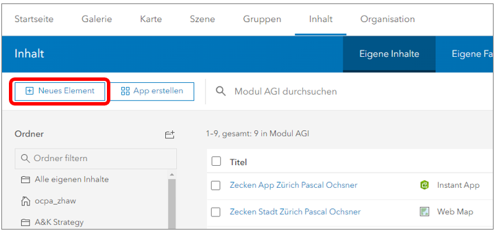
Kopiere nun die WMS-URL in geolion und füge sie in ArcGIS Online im entsprechenden Feld ein. Füge nach http ein s ein (https://wms.zh.ch…..) Wähle die Option WMS (OGC) und klicke auf «Weiter». Wähle in der Liste den WMS-Layer «Lufttemperatur Tag».
Definiere folgende Parameter:
- Titel = Lufttemperatur Tag
- Ordner = Modul AGI
- Tags = Temperatur
- Zusammenfassung = Lufttemperatur Tag auf 2m Höhe über Grund um 14 Uhr
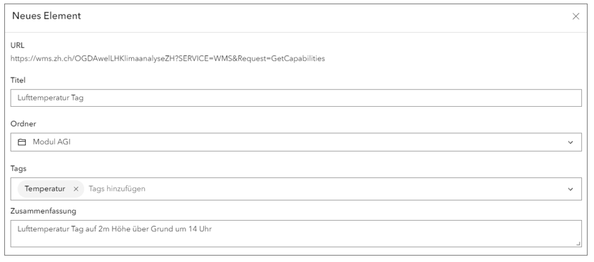
Öffne in ArcGIS Online die Web Map «Zecken Stadt Zürich Vorname Name». Gehe auf «Hinzufügen > Layer durchsuchen» und füge den Layer «Lufttemperatur Tag» zur Web Map hinzu. Verändere die Layerhierarchie und platziere die Temperaturkarte zuunterst.
Speichere die Änderungen.
Öffne nun die Web App. Der Layer «Lufttemperatur Tag» ist nun auch in der Web App enthalten und kann je nach Bedarf ein- und ausgeblendet werden (so wie alle anderen Layer auch).
Übung 11: ArcGIS Online: Web App erstellen via “Experience Builder”
Nun wirst Du eine zweite Web App erstellen, dieses Mal mit Unterstützung des Experience Builders. Der Experience Builder erlaubt eine viel flexiblere Gestaltung der Web App, insbesondere können verschiedenste Widgets in die Applikation integriert werden.
Öffne wiederum die Web Map «Zecken Stadt Zürich Vorname Name» und wähle im Menü links die Option «App erstellen > Experience Builder»
Wähle die Vorlage «Foldable». Du kannst eine Vorschau betrachten und dann via «Erstellen» in die Design-Oberfläche wechseln.
Nun kannst Du die Web App nach Belieben konfigurieren, mit Widgets ergänzen und Funktionalitäten einbinden.
Klicke nach Abschluss der Konfiguration auf «Speichern unter» und weise einen sinnvollen Namen zu. Veröffentliche anschliessend die Anwendung.
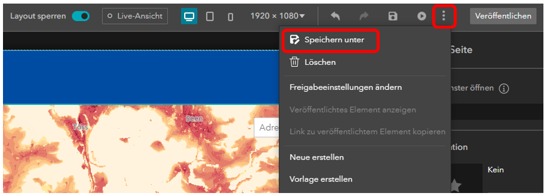